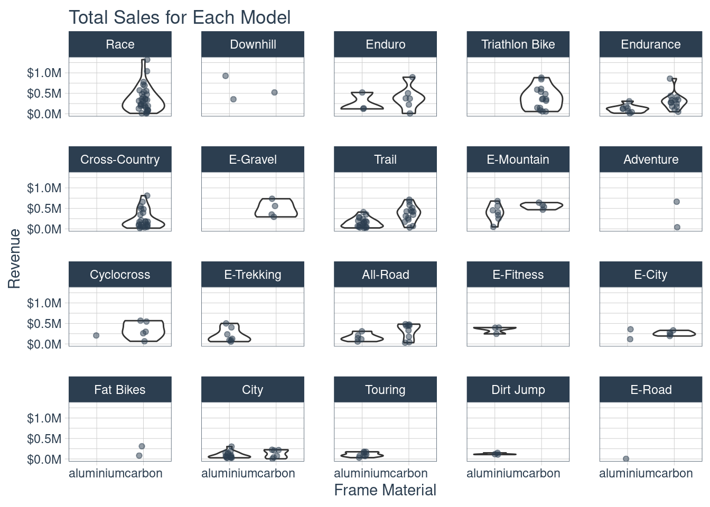
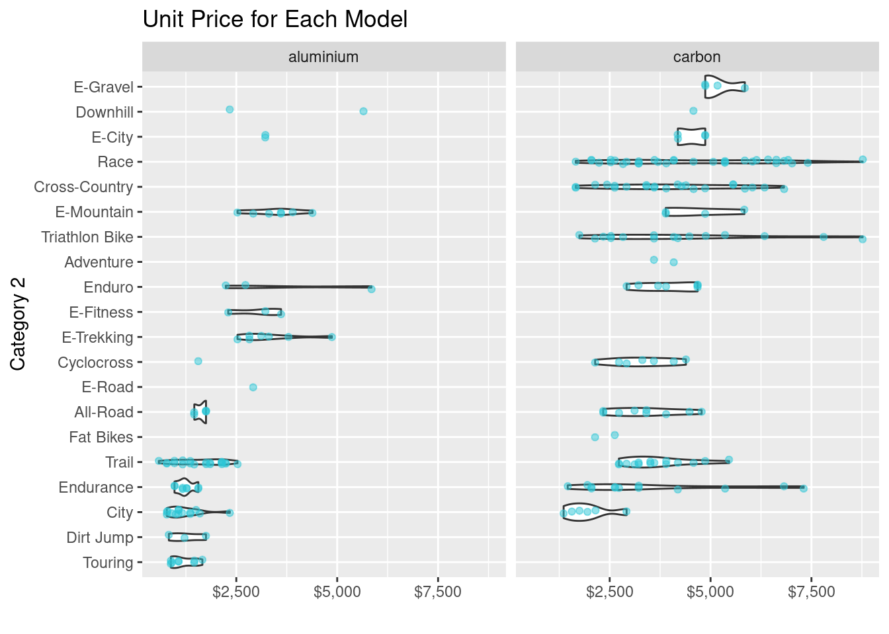
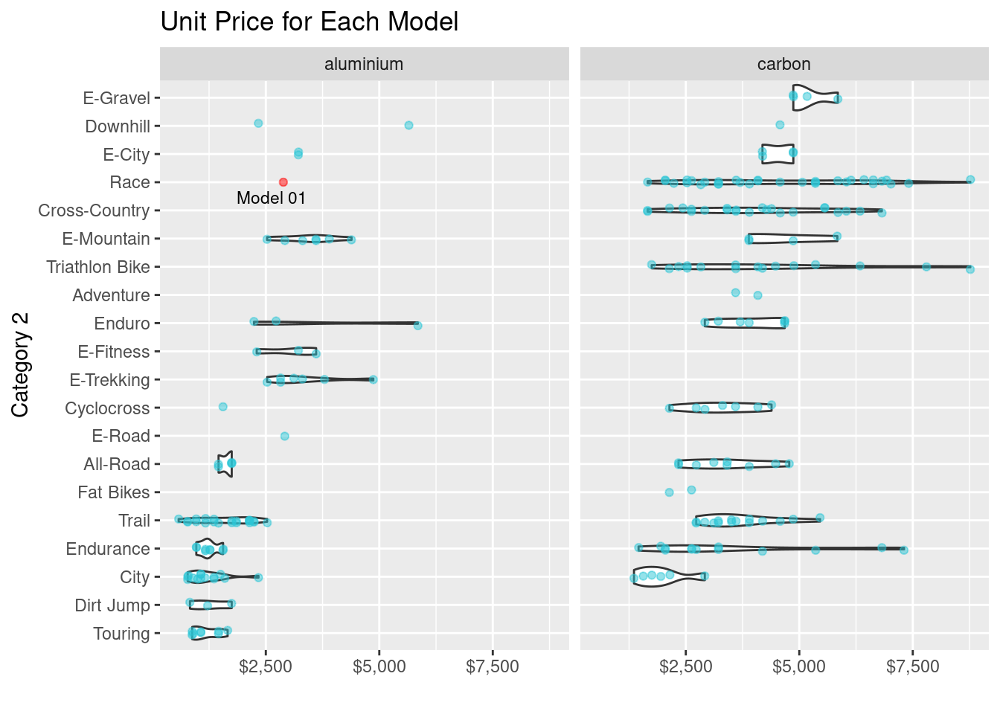

library(tidyverse)
library(tidymodels)
library(broom.mixed)
library(readr)
library(ggplot2)
library(parsnip)
library(recipes)
library(rsample)
library(yardstick)
library(rpart.plot)
library(tidyr)# Modeling ----------------------------------------------------------------
bike_orderlines_tbl <- readRDS("/home/abbasi/Desktop/R/raw_data/bike_orderlines.rds")
model_sales_tbl <- bike_orderlines_tbl %>%
select(total_price, model, category_2, frame_material) %>%
group_by(model, category_2, frame_material) %>%
summarise(total_sales = sum(total_price)) %>%
ungroup() %>%
arrange(desc(total_sales))
model_sales_tbl %>%
mutate(category_2 = as_factor(category_2) %>%
fct_reorder(total_sales, .fun = max) %>%
fct_rev()) %>%
ggplot(aes(frame_material, total_sales)) +
geom_violin() +
geom_jitter(width = 0.1, alpha = 0.5, color = "#2c3e50") +
facet_wrap(~ category_2) +
scale_y_continuous(labels = scales::dollar_format(scale = 1e-6, suffix = "M", accuracy = 0.1)) +
tidyquant::theme_tq() +
labs(
title = "Total Sales for Each Model",
x = "Frame Material", y = "Revenue"
)
bike_features_tbl <- readRDS("/home/abbasi/Desktop/R/BDML/bike_features_tbl.rds") %>%
unnest(`Brake Rotor`)
bike_features_tbl <- bike_features_tbl %>%
# rename all columns
rename_all(function(.name) {
.name %>%
# replace all names with the lowercase versions
tolower %>%
# replace all spaces etc with underscores
str_replace_all(" ", "_") %>%
str_replace_all("/", "") %>%
str_replace_all("-", "_") %>%
str_replace_all("__", "_")
})
bike_features_tblbike_features_tbl <- bike_features_tbl %>%
mutate(disc_brake = str_replace(disc_brake, "disc_brake_Shimano.MT200...UR300.", "disc_brake_Shimano.MT201")) %>%
mutate(disc_brake = str_replace_all(disc_brake, "\u00A0", " ")) %>%
mutate(wheel_1 = str_replace(wheel_1, "wheel_1_Alexrims.GX26P...Shimano.MT400", "wheel_1_Alexrims.GX26P1...Shimano.MT401"))
bike_features_tbl <- bike_features_tbl[ !duplicated(names(bike_features_tbl)) ]
#bike_features_tbl %>%
# mutate(~. = str_replace(~., ".*MT200.*UR300", "Shimano MT200 / UR300"))bike_features_tbl <- bike_features_tbl %>%
mutate(id = row_number()) %>%
mutate(frame_material = factor(frame_material)) %>%
select(id, everything(), -url)
bike_features_tbl %>% distinct(category_2)split_obj <- rsample::initial_split(bike_features_tbl, prop = 0.95,
strata = "category_2")
split_obj %>% training() %>% distinct(category_2)split_obj %>% testing() %>% distinct(category_2)bf_train_data <- training(split_obj)
bf_test_data <- testing(split_obj)# recipe
bf_rec <-
recipe(frame_material ~ ., data = bf_train_data) %>%
step_rm(disc_brake, wheel_1 ) %>%
step_novel(all_predictors(), -all_numeric())
dummies <- bf_rec %>% step_dummy(all_nominal(), -all_outcomes()) %>% step_zv(all_predictors())
prep(dummies, training = bf_train_data, retain = TRUE)## Data Recipe
##
## Inputs:
##
## role #variables
## outcome 1
## predictor 66
##
## Training data contained 220 data points and 2 incomplete rows.
##
## Operations:
##
## Variables removed disc_brake, wheel_1 [trained]
## Novel factor level assignment for model, category_1, category_2, ... [trained]
## Dummy variables from model, category_1, category_2, category_3, gender, ... [trained]
## Zero variance filter removed model_new, ... [trained]summary(dummies)lr_mod <-
logistic_reg() %>%
set_engine("glm")
lr_mod## Logistic Regression Model Specification (classification)
##
## Computational engine: glmbf_wokflow <-
workflow() %>%
add_model(lr_mod) %>%
add_recipe(dummies)
bf_wokflow## ══ Workflow ════════════════════════════════════════════════════════════════════
## Preprocessor: Recipe
## Model: logistic_reg()
##
## ── Preprocessor ────────────────────────────────────────────────────────────────
## 4 Recipe Steps
##
## ● step_rm()
## ● step_novel()
## ● step_dummy()
## ● step_zv()
##
## ── Model ───────────────────────────────────────────────────────────────────────
## Logistic Regression Model Specification (classification)
##
## Computational engine: glmbf_fit <-
bf_wokflow %>%
fit(data = bf_train_data)
bf_fit## ══ Workflow [trained] ══════════════════════════════════════════════════════════
## Preprocessor: Recipe
## Model: logistic_reg()
##
## ── Preprocessor ────────────────────────────────────────────────────────────────
## 4 Recipe Steps
##
## ● step_rm()
## ● step_novel()
## ● step_dummy()
## ● step_zv()
##
## ── Model ───────────────────────────────────────────────────────────────────────
##
## Call: stats::glm(formula = ..y ~ ., family = stats::binomial, data = data)
##
## Coefficients:
## (Intercept)
## 2.658e+01
## id
## 3.428e-07
## bike_id
## 6.146e-08
## model_year
## -8.544e-06
## weight
## 1.285e-08
## price
## -1.482e-08
## model_Aeroad.CF.SL.8.0
## -6.683e-06
## model_Aeroad.CF.SL.8.0.Di2
## 6.832e-06
## model_Aeroad.CF.SL.Disc.8.0.Di2
## -2.577e-05
## model_Aeroad.CF.SL.Disc.8.0.ETAP
## -2.401e-05
## model_Aeroad.CF.SLX.9.0.Di2
## 2.359e-05
## model_Aeroad.CF.SLX.9.0.SL
## 2.725e-05
## model_Aeroad.CF.SLX.Disc.9.0.Di2
## 1.028e-06
## model_Aeroad.CF.SLX.Disc.9.0.ETAP
## 8.692e-06
## model_Aeroad.WMN.CF.SL.8.0
## -7.006e-06
## model_Commuter.3.0
## -5.313e+01
## model_Commuter.4.0
## -5.313e+01
## model_Commuter.5.0
## -5.313e+01
## model_Commuter.6.0
## -5.313e+01
## model_Commuter.8.0
## -5.313e+01
## model_Commuter.Sport.5.0
## -5.313e+01
## model_Commuter.Sport.8.0
## -5.313e+01
## model_Commuter.ON.7
## -5.313e+01
##
## ...
## and 2545 more lines.bf_fit %>%
pull_workflow_fit() %>%
tidy()bf_pred <-
predict(bf_fit, bf_test_data, type="prob") %>%
bind_cols(bf_test_data %>% select(frame_material, category_2))
bf_pred %>%
roc_curve(truth = frame_material, .pred_aluminium) %>%
autoplot()bf_pred %>%
roc_curve(truth = frame_material, .pred_carbon) %>%
autoplot()bf_predbf_roc <- bf_pred %>%
roc_auc(truth = frame_material, .pred_aluminium)
bf_rocbf_roc <- bf_pred %>%
roc_auc(truth = frame_material, .pred_carbon)
bf_rocmodel_01_linear_lm_simple <- linear_reg(mode = "regression") %>%
set_engine("lm") %>%
fit(price ~ category_2 + frame_material, data = bf_train_data)
model_01_linear_lm_simple## parsnip model object
##
## Fit time: 4ms
##
## Call:
## stats::lm(formula = price ~ category_2 + frame_material, data = data)
##
## Coefficients:
## (Intercept) category_2All-Road category_2City
## 2194.3 -493.0 -1288.9
## category_2Cross-Country category_2Cyclocross category_2Dirt Jump
## 176.3 -380.8 -928.7
## category_2Downhill category_2E-City category_2E-Fitness
## 1799.7 888.9 848.0
## category_2E-Gravel category_2E-Mountain category_2E-Road
## 1345.0 1092.1 724.7
## category_2E-Trekking category_2Endurance category_2Enduro
## 1270.7 -538.6 509.9
## category_2Fat Bikes category_2Race category_2Touring
## -1460.0 691.8 -1022.8
## category_2Trail category_2Triathlon Bike frame_materialcarbon
## -417.2 364.3 1649.7bf_test_data <- bf_test_data %>% filter(category_2 != "Fat Bikes")
yards <- model_01_linear_lm_simple %>%
predict(new_data = bf_test_data) %>%
bind_cols(bf_test_data %>% select(price)) %>%
yardstick::metrics(truth = price, estimate = .pred)
yardsg1 <- bike_features_tbl %>%
mutate(category_2 = as.factor(category_2) %>%
fct_reorder(price)) %>%
ggplot(aes(category_2, price)) +
geom_violin() +
geom_jitter(width = 0.1, alpha = 0.5, color = "#2dc6d6") +
coord_flip() +
facet_wrap(~ frame_material) +
scale_y_continuous(labels = scales::dollar_format()) +
labs(
title = "Unit Price for Each Model",
y = "", x = "Category 2"
)
g1
new_race_alu <- tibble(
model = "Exceed AL SL new",
category_2 = "Race",
frame_material = "aluminium",
shimano_dura_ace = 0,
shimano_ultegra = 0,
shimano_105 = 0,
shimano_tiagra = 0,
Shimano_sora = 0,
shimano_deore = 0,
shimano_slx = 0,
shimano_grx = 0,
Shimano_xt = 1,
Shimano_xtr = 0,
Shimano_saint = 0,
SRAM_red = 0,
SRAM_force = 0,
SRAM_rival = 0,
SRAM_apex = 0,
SRAM_xx1 = 0,
SRAM_x01 = 0,
SRAM_gx = 0,
SRAM_nx = 0,
SRAM_sx = 0,
Campagnolo_potenza = 0,
Campagnolo_super_record = 0,
shimano_nexus = 0,
shimano_alfine = 0
)
new_race_alupredict(model_01_linear_lm_simple, new_data = new_race_alu)models_tbl <- tibble(
model_id = str_c("Model 0", 1:1),
model = list(
model_01_linear_lm_simple
)
)
models_tblpredictions_new_race_alu_tbl <- models_tbl %>%
mutate(predictions = map(model, predict, new_data = new_race_alu)) %>%
unnest(predictions) %>%
mutate(category_2 = "Race") %>%
left_join(new_race_alu, by = "category_2")
predictions_new_race_alu_tblg2 <- g1 +
geom_point(aes(y = .pred), color = "red", alpha = 0.5,
data = predictions_new_race_alu_tbl) +
ggrepel::geom_text_repel(aes(label = model_id, y = .pred),
size = 3,
data = predictions_new_race_alu_tbl)
g2